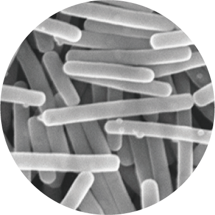
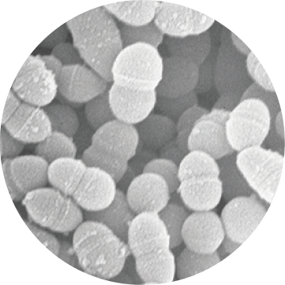

ヨーグルトのあの独特の質は、牛乳に乳酸菌を加えて適切な温度で発酵させることで形成される。 その変化を観察するために、発酵時間を５分づつ変えたヨーグルト（牛乳）を９時間分用意し、掬って取り出したものを撮影し並べた。

撮影の様子。ヨーグルトの内部をスプーンで掬いコップの裏に載せて撮影した。
伝統的なヨーグルトはプルガリアの乳酸桿菌のLactobacillus delbrueckii subsp. bulgaricus（ラクトバチルス デルブリッキィ 亜種 ブルガリクス）と好熱性の連鎖球菌Streptococcus thermophilus （ストレプトコッカス サーモフィラス）の2種類の乳酸菌を使って作られる。


左：ストレプトコッカス サーモフィラス
右：ラクトバチルス デルブリッキィ 亜種 ブルガリクス
2つの乳酸菌は42℃前後で最も活動する。乳酸菌は牛乳に含まれる乳糖を乳酸に変化させ、カゼインを始めとするたんぱく質を分解する。 こうして乳酸発酵が進み凝固したものをカード（凝乳）、分離した水分をホエイ（乳清)と呼ぶ。 2種類の乳酸菌が助け合うことで、たった数時間のうちにヨーグルトは完成する。
発酵の様子。密閉した容器に乳酸菌を加えた牛乳が100mLずつ入っている。